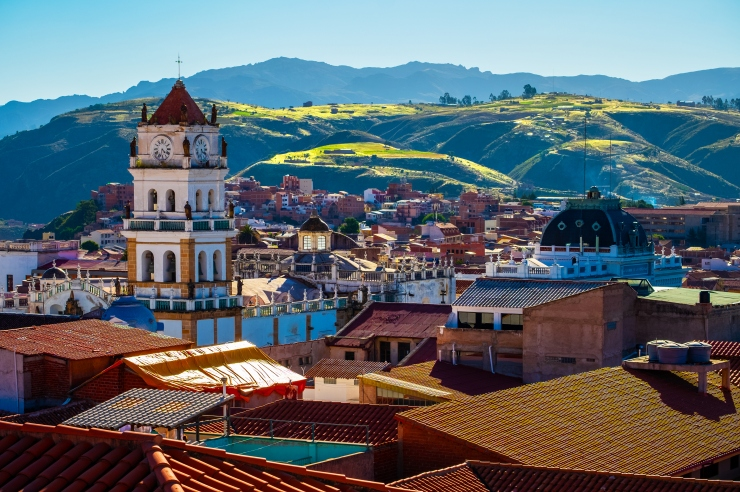
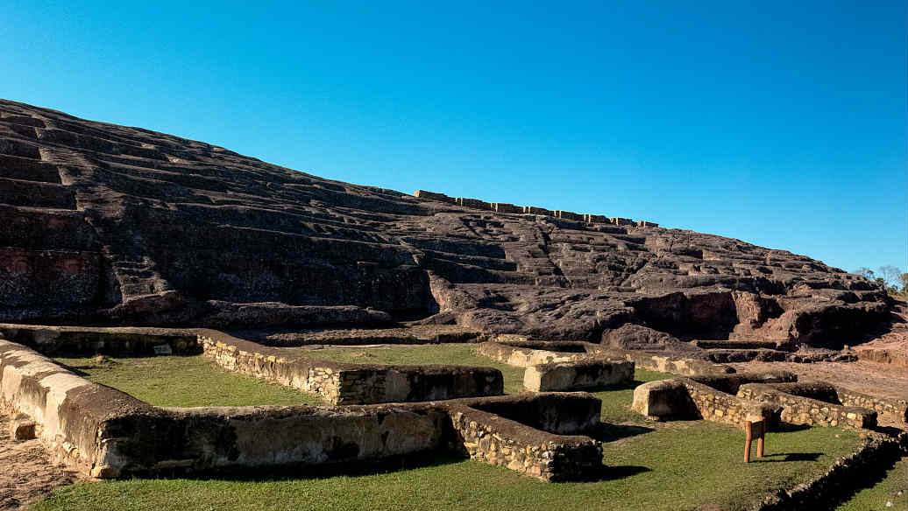

Parte 1: Período Pré-Colombiano até a Colonização Espanhola
A história da Bolívia remonta a civilizações pré-colombianas, incluindo os incas, que dominaram a região
antes da chegada dos espanhóis em 1532. Durante o período colonial, a Bolívia fazia parte do vice-reinado do
Peru. A exploração de prata em Potosí foi uma atividade econômica crucial para o Império Espanhol, mas
também levou à exploração dos povos indígenas.
Parte 2: Período Pós-Independência até o Século 20
A Bolívia conquistou sua independência da Espanha em 1825. O país passou por uma série de conflitos internos
e perdeu territórios em guerras com países vizinhos, como o Chile. A economia boliviana também foi marcada
pelo declínio após a independência, com conflitos políticos frequentes e instabilidade. Durante o século 20,
a Bolívia passou por várias mudanças políticas, incluindo governos democráticos, regimes militares e
governos de esquerda.


Parte 3: Era Contemporânea e a Ascensão de Evo Morales
Na virada do século 21, a Bolívia experimentou uma mudança significativa com a eleição de Evo Morales em
2006, o primeiro presidente indígena do país. Seu governo implementou políticas socialistas e nacionalistas,
fortalecendo os direitos dos povos indígenas e promovendo reformas econômicas. No entanto, seu governo
também foi marcado por controvérsias, incluindo tensões étnicas e disputas sobre recursos naturais.